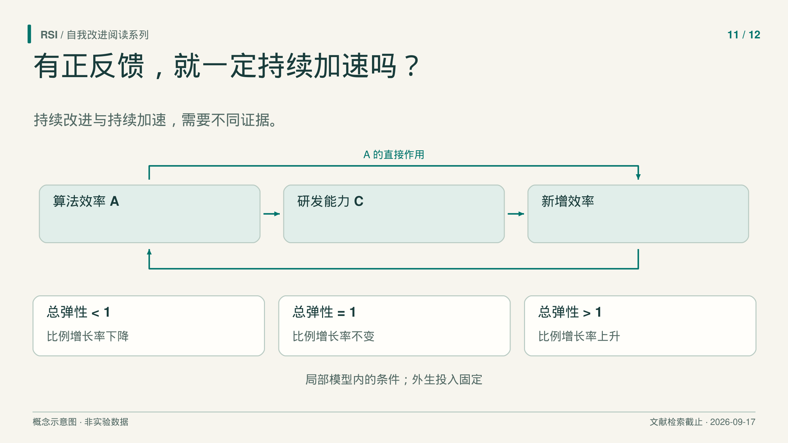
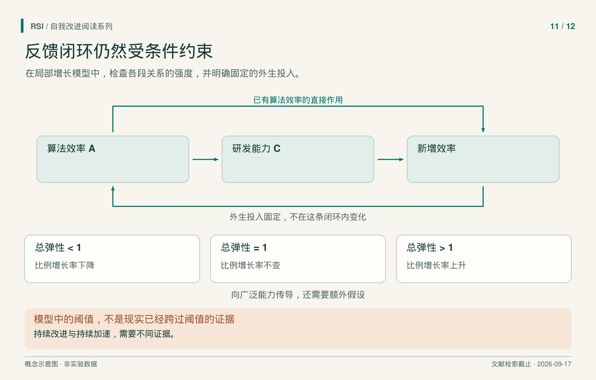

设想一个研究系统，每轮都找到有用改进。新版本比前一版更好，也帮助了下一轮研究。可是，再获得同样比例的收益，需要的时间越来越长。改进仍在继续，比例增长却在放慢。
这个假想情形指出了递归自我改进论证中的一处缺口：正反馈说明已有进步能够帮助产生更多进步；持续加速还需要判断，这种帮助相对于已经积累的能力，增长得够不够快。

讨论加速之前，先说清哪一个量的增长率在上升。
先分清效率存量与新增效率
Cunningham 等人的《The Economics of Recursive Self-Improvement》把这项区别写进模型。算法效率 A 定义为达到给定能力所需训练算力的倒数。同样能力所需算力越少，A 越大。
“给定能力”很重要。相同预算下 benchmark 得分更高，不会自动成为这个倒数量的直接测量。实证分析仍需找到办法，比较达到共同能力目标所需的算力。
接下来区分三个量：
| 量 | 含义 |
|---|---|
A |
已经积累的算法效率水平。 |
A_dot |
单位时间产生的新增算法效率。 |
g = A_dot / A |
效率的比例增长率。 |
分母说明了为什么单位时间产出增加，仍可能没有增长率上升。效率水平越大，同样的新增量所占比例越小。新增量即使上升，也可能赶不上存量增长。
在这套模型中，“自维持加速”指外生投入固定时，g 随 A 上升。这是围绕算法效率选择的一种加速定义。讨论阈值之前，需要先把定义放在桌面上。
一个幂律例子让区别更直观
用一个教学假设，设新增效率满足：
A_dot = k × A^p，其中 k > 0
它不是对当前 AI 拟合出的规律。两边除以 A，得到：
g = k × A^(p − 1)
当 0 < p < 1 时，效率更高的系统每单位时间产生更多新增效率，反馈方向为正。但新增量的增长慢于存量，因此比例增长率下降。p = 1 时增长率不变；p > 1 时，在这项假设关系内增长率上升。
这解释了为什么关键阈值是一，而不是零。一般模型不要求某个幂律永远成立，而是用局部弹性表达同一比较：已有效率变化一个比例，新增效率的生产会变化多少比例？
反馈有直接路径，也有能力路径
现有算法效率可以直接影响继续研发，也可以先提高研发能力 C，再由能力促进新的算法进步。Cunningham 等人把两条路径合为：
E = e_direct + e_research × e_capability
e_direct 描述能力及其他投入不变时，A_dot 对 A 的直接响应；e_capability 描述 C 对 A 的响应；e_research 描述 A_dot 对 C 的响应。后两者相乘，表达经过能力的两步传递，再与直接路径相加。
这个乘积还区分了间接路径变弱的两种原因：效率提升可能不再明显增加研发能力；研发能力也可能继续上升，却无法明显增加新增效率。例如，实验吞吐量限制第二段关系时，第一段仍可能很强。这是由模型结构推出的判断：只观察到其中一条边很强，还不足以说明整个两步反馈同样强。测量需要覆盖两段传递，不能把其中一段默认成无限有效。
弹性是局部的比例敏感度：粗略地说，相关其他投入固定时，输入小幅增加约百分之一，输出会增加多少百分比。它并不等于两条 benchmark 曲线之间的相关性。
在生产函数为正、可微，且外生投入固定时，对增长率定义求导得到：
d log(g) / d log(A) = E − 1
所以 E > 1 对应这一点上的比例增长率上升；E = 1 对应局部不变；E < 1 对应下降。这是模型内部条件，不能当作现有 AI 已跨过阈值的证据。论文

阈值属于固定外生投入下的局部模型。研发能力与广泛能力之间，还需要另外建立联系。
跨过一次阈值，不保证始终超过它
系统变化时，弹性也可能变化。某个瓶颈占主导时很有效的方法，可能在另一项投入成为约束后不再同样有用。
设想一个实验吞吐量固定的研究组。更好的提议能力，起初可以帮助它选到更有价值的实验；这一步改善之后，继续增加提议数量，未必能增加实际完成的实验数量或信息量。这是解释投入互补性的教学例子，不是论文测得的上限。
经济模型讨论了人力、实验或推理算力、训练算力与数据等互补约束。固定这些外生投入，有助于辨认反馈本身。如果下一次运行同时获得更多算力或人工协助，结果变好便不能单独说明自维持反馈更强。
因此，要把局部阈值外推到后续所有状态，还需要知道响应关系如何改变。论文中研发弹性与校准仍有较大不确定性，没有据此判定现实系统已能持续加速。这个阈值本身也不证明有限时间奇点。
从窄研发能力到广泛影响，还要另一座桥
模型进一步区分有助于算法研发的窄能力，与关联更广经济产出的能力。围绕前者形成强反馈，不会自动使后者以相同方式加速。广能力条件还取决于，随着效率提高，广能力对效率的敏感度怎样变化。
这与 Chalmers 的分析形成一种有用对照：自放大能力与另一项所关心能力需要额外的跟踪关系。这是分析上的联系，两篇论文并非两次独立实验，不能共同充当“所有重要能力已同步加速”的证据。
具体评价时，可以先定义共同能力目标及效率指标，再比较单位时间或资源获得的新增改进，同时记录外生投入。随后从不同能力起点重复比较，观察研发过程的资源花在什么地方。这些是拟议测量，不是本文已经建立的结果。
例如，以更低成本达到同一目标，可以改变 A；换一个目标后得到更高分，则同时改变了被测对象。记录目标身份，能避免把两种观察悄悄拼成同一条效率序列。失败研究也要进入时间与投入统计，因为增长率讨论的是整个过程在时间中实际产生了什么。
一连串更好的系统可以支持“持续改进”。要支持“持续加速”，还需要说明增长率怎样变、代价多少、投入是什么。更强主张中的每一段联系，都需要自己的证据。
参考来源
- Cunningham 等，《The Economics of Recursive Self-Improvement》，v1，2026。
- Chalmers，《The Singularity: A Philosophical Analysis》，2010。
本文基于文献纳入截至 2026 年 9 月 17 日的书稿整理。文中数值阈值是分析条件，不是当前系统的实测判定。